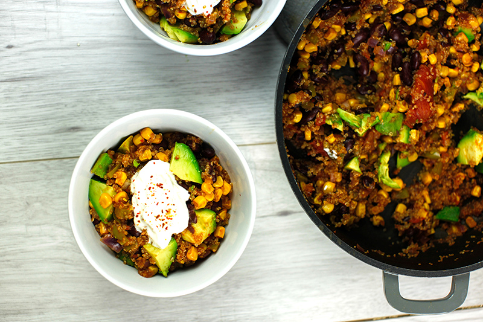

One Pot Quinoa

 25 Min
25 Min
 simpel
simpel
 18.08.2025
18.08.2025
Zutaten für
- 1 Paprika
- 1 Dose Mais
- 1 Dose rote Bohnen
- 1 Zwiebel
- 1 Dose geschälte Tomaten
- 1 Tasse Quinoa
- 2 Tassen Gemüsebrühe oder Wasser
- 1 Prise Salz
- 1 Prise Chiliflocken
- 1 Avocado
- 125 g Creme Fraiche
Zubereitung
ca. 25 Minuten
Gesamtzeit ca. 40 Minuten
Paprika und Zwiebel schneiden und gemeinsam mit den Bohnen, dem Mais, den geschälten Tomaten dem Quinoa und dem Wasser bzw. der Brühe in einem Topf geben. Mit Salz und Chili würzen und ca 20-25 Minuten kochen, bis die komplette Flüssigkeit verschwunden ist. Avocado schneiden und gemeinsam mit einem oder 2 EL Sauerrahm anrichten. Oben drauf noch ein bisschen Chili und schon kann das leckere Gericht verspeist werden.
Rezept erstellt von

Stefan, gefunden bei "www.ninaradman.com".